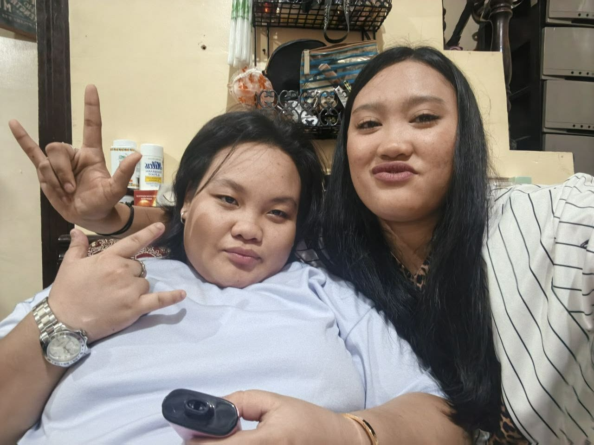
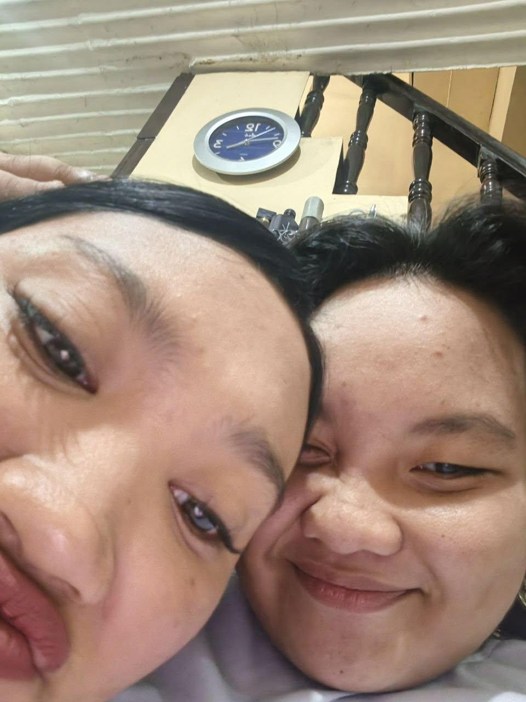
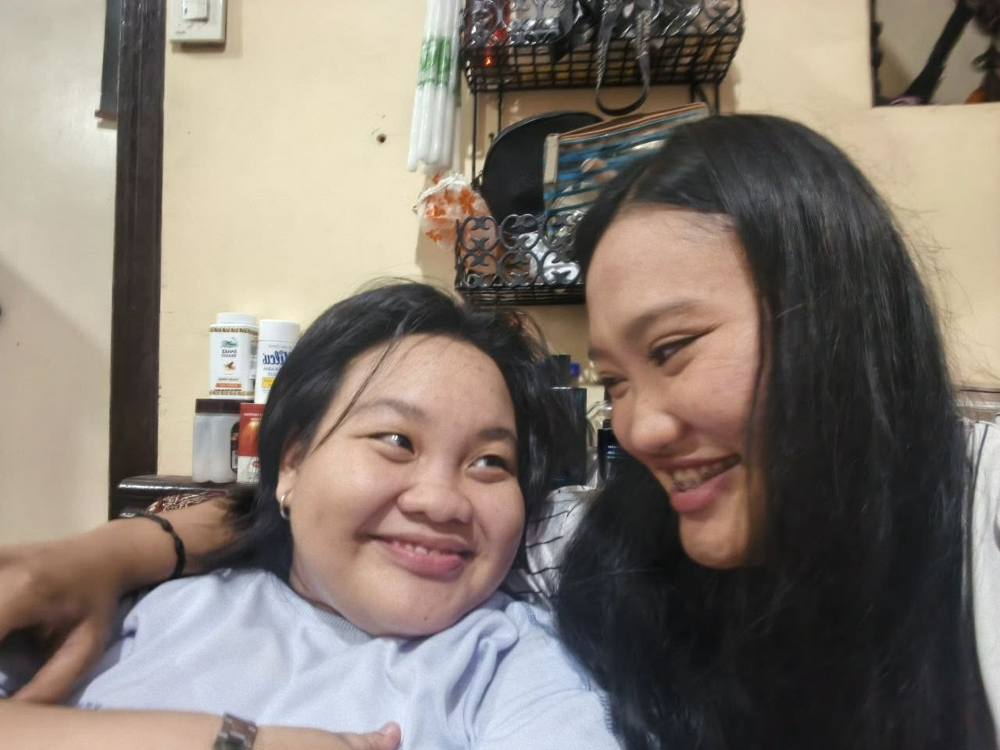

Nemia & Nevia
Forever Lifetime ❤️
Mula nang muli tayong pinagtagpo:
Ang Ating Kwento ng Pag-ibig 📖
Unang Pagkikita
Ang araw na una kaming nagkakilala.
Huling Pagkikita
Araw na huli kaming nagkita bago kami muling nagkaroon ng komunikasyon.
Muling Pinagtagpo (TikTok Live) ✨
Araw na muli kaming pinagtagpo ng pagkakataon sa TikTok Live at nagsimula ulit ang kuwento namin.
Paghahanap sa Facebook 🔍
Araw na sinubukan kong hanapin ang Facebook niya dahil gusto ko siyang makausap ulit.
Paglipat sa Messenger 💬
Araw na lumipat ang pag-uusap namin sa Messenger at nagsimula kaming magpalitan ng updates, mag-video call, at mas makilala ang isa't isa.
Unang LSM 💌
Araw na ibinigay ko sa kanya ang una kong LSM upang mapasaya siya at maiparamdam ang pagmamahal ko.
Pangungulila 🏡
Araw na gusto ko na siyang makita at makasama sa bahay namin.
Panliligaw ❤️
Araw na nagsimula akong manligaw sa kanya at napagtanto kong ayoko siyang mawala sa buhay ko.
Pagkikita sa Bahay 🌹
Araw na pumunta siya sa bahay namin at nagkaroon kami ng pagkakataong magkita nang personal.
Unang Monthsary 🎉
Panahon ng unang monthsary namin.
Mga Alaala Natin 📸

Nemia & Nevia ❤️

Forever Lifetime ✨

Together Always 🌹
LSM Mula Kay Nems Para Sa'yo 💌
Hi, my loveee, loveyy, babiii kooo. Alam ko pong lagi kang pagod sa work mo, love, at alam kong hindi madali yung araw-araw na kailangan mong kumilos, magtrabaho, at harapin yung mga bagay na nakakapagod sa'yo. Kaya sana, kahit pagod na pagod ka na, huwag mong kalimutang alagaan yung sarili mo, ha? Kumain ka sa tamang oras, uminom ka ng maraming tubig, magpahinga ka kapag may pagkakataon, at huwag mong piliting kayanin lahat kapag pagod na pagod ka na. Sana alam mong may isang taong palaging nag-aalala sa'yo, proud na proud sa'yo, at sobrang humahanga sa lahat ng ginagawa mo, at ako po 'yon, love. I'm always proud of you, babi, kahit sa mga araw na pakiramdam mo wala kang nagagawang sapat. Para sa akin, napakagaling mo, napakatatag mo, at sobrang halaga mo sa buhay ko. Hindi mo kailangang maging malakas palagi, okay? Kung napapagod ka, magpahinga ka. Kung mabigat na ang lahat, pwede kang magkwento sa akin. Hindi mo kailangang sarilinin lahat, love, dahil gusto kong maging isa ako sa mga taong nagbibigay sa'yo ng pahinga, comfort, at peace pagkatapos ng nakakapagod mong araw.
Love, gusto ko rin pong malaman mo kung gaano kita kamahal, sobra-sobra pa sa mga salitang kaya kong sabihin. Hindi lang kita mahal kapag masaya tayo, kapag marami tayong oras para sa isa't isa, o kapag palagi tayong nag-uusap. Mahal na mahal kita kahit pareho tayong busy, kahit may mga araw na kaunti na lang yung oras natin para magkwentuhan, at kahit minsan hindi natin naibibigay sa isa't isa yung dating oras na nakasanayan natin. Naiintindihan ko po na may mga responsibilidad ka rin, at ayokong maramdaman mong kailangan mong mamili sa pagitan ng pahinga mo, trabaho mo, at pagmamahal mo sa akin. Gusto ko lang na kahit abala tayo sa kani-kaniyang ginagawa, hindi natin makalimutan na may isa tayong taong mahal na mahal at gustong makasama sa buhay. Kahit simpleng update lang, kahit saglit na pag-uusap, at kahit maikling pangungumusta lang, sobrang naa-appreciate ko na po 'yon, love. Hindi ko naman hinihingi na buong araw mo ay para sa akin, ang gusto ko lang ay maramdaman pa rin nating pareho na mahalaga tayo sa isa't isa.
Babi, may gusto rin po akong sabihin sa'yo mula sa puso ko. Natatakot po talaga akong mawala ka. Sobrang laki na ng parte mo sa buhay ko, at sa dami ng bagay na pinangarap kong gawin kasama ka, hindi ko maiwasang matakot sa posibilidad na baka isang araw ay magbago ang lahat. Natatakot akong dumating yung araw na hindi mo na ako mahalin tulad ng pagmamahal mo sa akin ngayon. Natatakot akong baka may dumating na ibang tao na mas piliin mo, na baka balang araw ay ipagpalit mo ako, saktan mo ako, o bigla mo na lang akong iwan nang hindi ko man lang maintindihan kung bakit. Natatakot akong maiwan mag-isa sa ere, love, lalo na't ikaw yung taong minahal ko nang ganito kalalim at patuloy na pinipili araw-araw. Hindi ko po sinasabi ang mga ito para pagbawalan kang magkaroon ng ibang tao sa buhay mo o para pigilan ka sa mga bagay na kailangan mong gawin. Sinasabi ko lang ito dahil gusto kong maging totoo sa'yo tungkol sa nararamdaman ko. Mahal na mahal kita, at dahil mahal na mahal kita, natatakot din akong mawala yung taong naging napakahalaga sa akin.
Pero love, sa kabila ng mga takot na 'yon, gusto kong matutunan nating alagaan ang relasyon natin nang may tiwala, pag-unawa, at katapatan. Sana, kung dumating man ang panahong may problema tayo, piliin nating mag-usap nang maayos kaysa basta na lang sumuko. Kung may nagbago sa nararamdaman mo, sana sabihin mo sa akin nang totoo. Kung may bumabagabag sa'yo, sabihin mo rin sa akin. Kung may bagay akong nagagawa na nakakasakit sa'yo, handa akong makinig at matuto. Ayokong hulaan palagi kung ano ang nasa isip at puso mo, dahil mas gusto kong marinig ang katotohanan mula mismo sa'yo. At kung may araw man na hindi ka okay, sana huwag mong isipin na kailangan mong lumayo sa akin para lang hindi ako madamay sa mga problema mo. Pwede tayong magpahinga, mag-usap, at maghanap ng paraan para mas maintindihan natin ang isa't isa. Hindi natin kailangang maging perpekto para mapanatili ang pagmamahalan natin, love. Ang mahalaga ay pareho tayong willing na makinig, umunawa, at ayusin ang mga bagay na kaya nating ayusin.
My love, sana huwag mo akong ipagpalit, ha? Sana kung ako pa rin ang taong mahal mo, patuloy mo akong piliin at iparamdam sa akin na may lugar pa rin ako sa puso mo. Sana huwag mo akong saktan sa pamamagitan ng pagtatago ng katotohanan, at sana huwag mo akong iwan nang biglaan na para bang wala lang yung lahat ng pinagsamahan natin. Hindi ko hinihinginging mangako ka ng mga bagay na hindi mo kayang tiyakin sa hinaharap. Ang hinihiling ko lang ay maging totoo ka sa akin, maging tapat ka sa pagmamahal mo, at huwag mong hayaang ako lang ang lumalaban para sa atin. Gusto kong pareho tayong kumikilos para mapanatiling matatag ang relasyon natin. Gusto kong maramdaman mong ligtas kang maging ikaw sa piling ko, at gusto ko ring maramdaman na hindi ako nag-iisa sa pagmamahal na ito. Dahil ikaw ang pinili ko, love, at kung patuloy mo rin akong pipiliin, gusto kong ipakita sa'yo araw-araw na hindi masasayang ang pagmamahal at tiwalang ibinibigay mo sa akin.
At please, loveee, huwag mong kakalimutan na kahit gaano ka kapagod sa work, may isang Nems dito na palaging proud sa'yo, nag-aalala sa'yo, sumusuporta sa mga pangarap mo, at nagmamahal sa'yo nang buong puso. Hindi mo kailangang suklian ang lahat ng ginagawa ko sa pamamagitan ng pagiging available sa akin palagi. Ang gusto ko lang ay alagaan mo rin ang sarili mo at huwag mong kalimutang may taong masayang-masaya dahil ikaw ang minamahal niya. Kapag pagod ka, pahinga ka. Kapag malungkot ka, magsabi ka sa akin kung kaya mo. Kapag may problema ka, hindi mo kailangang matakot na huhusgahan kita. Gusto kong maging partner na kaya mong lapitan, hindi dagdag na bigat sa mga araw na nahihirapan ka. At kahit hindi kita laging katabi, sana maramdaman mo sa mga simpleng mensahe ko kung gaano kita kamahal at kung gaano kita gustong makitang okay.
I love you so, so, so much, my loveee, babiii, loveyy kooo. Ikaw yung taong gusto kong makasama sa masasayang araw at gusto ko ring suportahan sa mga araw na hindi madali ang lahat. Hindi ko alam ang lahat ng mangyayari sa future natin, pero alam kong sa ngayon, buong puso kitang pinipili at gusto kong patuloy nating buuin ang relasyon natin nang magkasama. Sana huwag nating kalimutan ang isa't isa kahit nagiging busy na tayo sa buhay. Sana manatili tayong tapat, maalaga, at marunong umunawa. At sana, kapag dumating ang mga araw na natatakot ako o may mga bagay na hindi ko maintindihan, tulungan mo akong maging panatag sa pamamagitan ng katapatan at pagmamahal mo, tulad din ng gagawin ko para sa'yo. Hindi kita gustong mawala, love, pero higit sa lahat, gusto kong manatili tayo sa isa't isa dahil pareho nating gusto, pareho nating pinipili, at pareho nating pinapahalagahan ang pagmamahalan natin.
Take care always, my love. I'm so proud of you, lalo na sa lahat ng pagsisikap mo kahit pagod ka na. Sana pagkatapos ng bawat nakakapagod mong araw, maalala mong may isang taong sobrang saya na ikaw ang minamahal niya. Mahal na mahal kita, loveee, higit pa sa kayang ipaliwanag ng isang mahabang message. Ikaw ang aking loveyy, ang aking babiii, at ang taong patuloy kong gustong mahalin at alagaan. Sana sa bawat araw na lumilipas, mas lalo nating mapatibay ang tiwala natin sa isa't isa. I will keep choosing you, loving you, and appreciating you, my love. Please take care of your heart, and let's take care of our love together. ILOVEYOUSOSOSOSOSOSOMUCHHHHH, MY LOVE, MY BABIII, MY LOVEYYY.